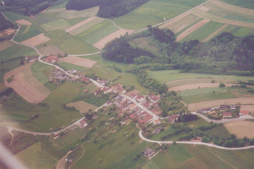
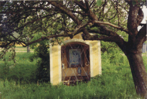
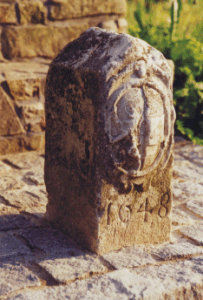
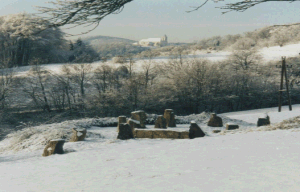
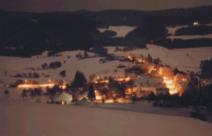
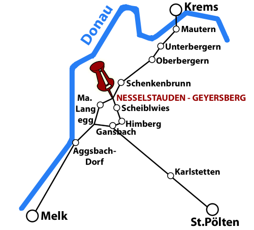
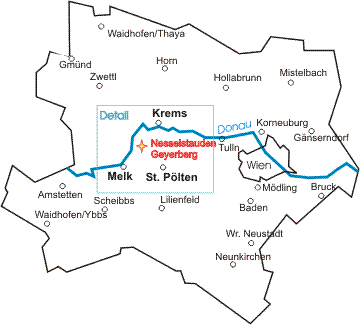

Steckbrief
- Name
- Nesselstauden-Geyersberg, in der Gemeinde Bergern im Dunkelsteinerwald, im Bezirk Krems
- Lage
- im Dunkelsteinerwald, im Dreieck Krems – St. Pölten – Melk
- Höhe
- 505 m ü. d. M.
- Einwohner
- ca. 100
- Ortsteile
- Zentrum, West-, Ost-, Nord- und Bergsiedlung
- Im Ort gibt's
- Feuerwehrhaus
- Sportplatz
- Gemeinschaftsraum mit Jugendraum
- Steinkreis (megalithisches Kalenderbauwerk)
- Eine Zentralbank und eine Pensionistenbank *gg*
- Vereine im Ort
- Freiwillige Feuerwehr Geyersberg
- Hobbysportverein SV Knudde
- ÖKB Geyersberg-Schenkenbrunn
- Dorferneuerung Nesselstauden-Geyersberg
Fotos der Ortschaft






Orientierung

